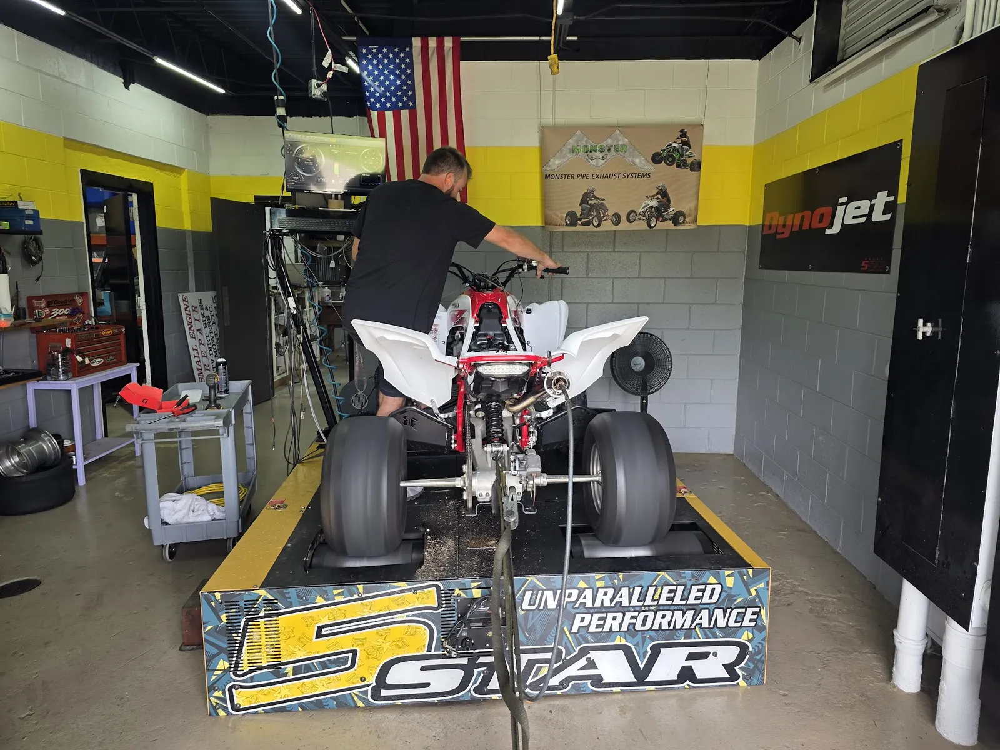
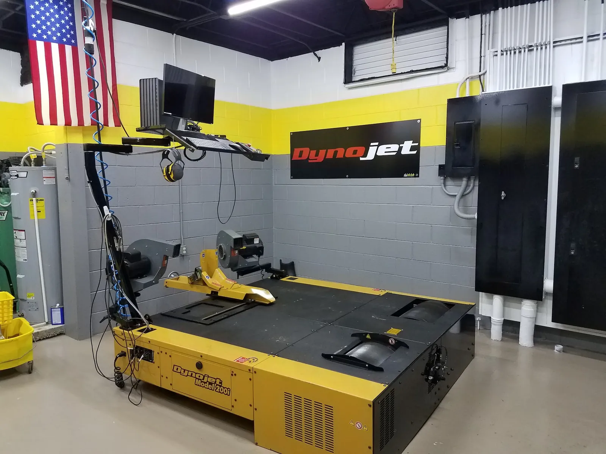
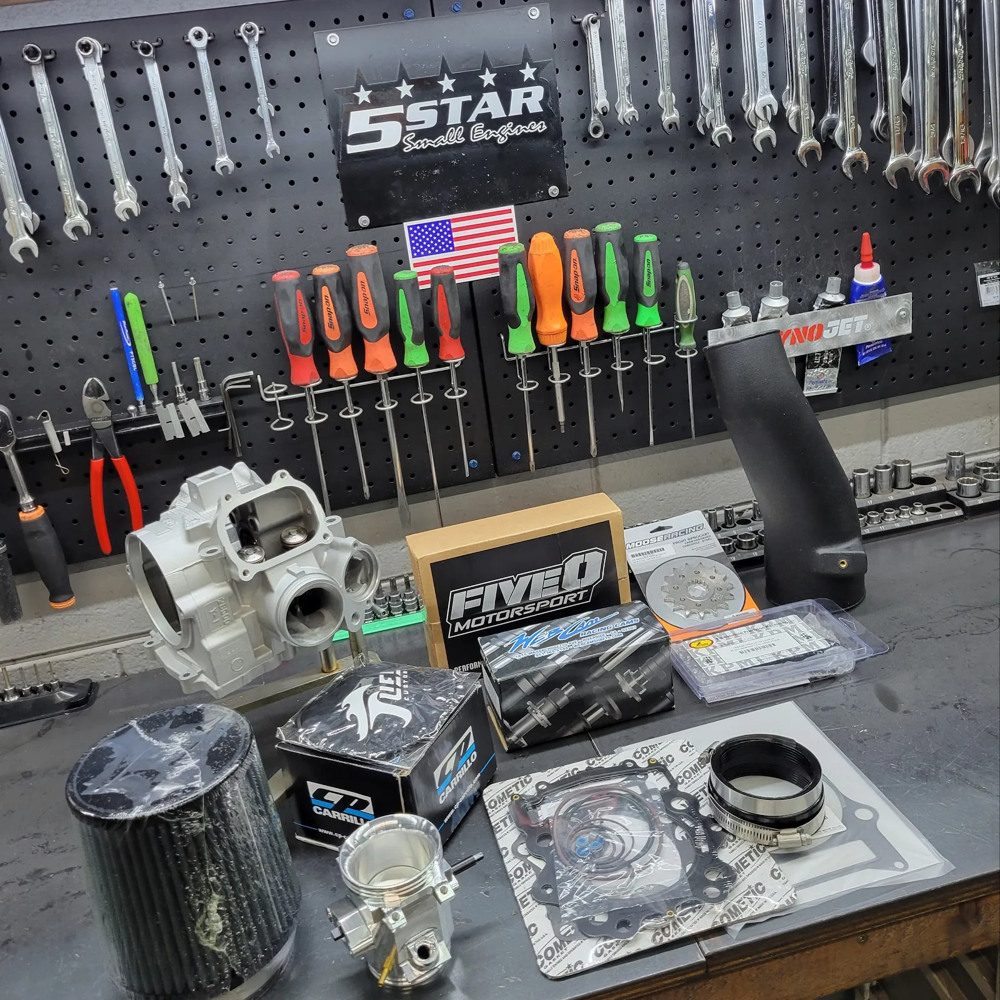
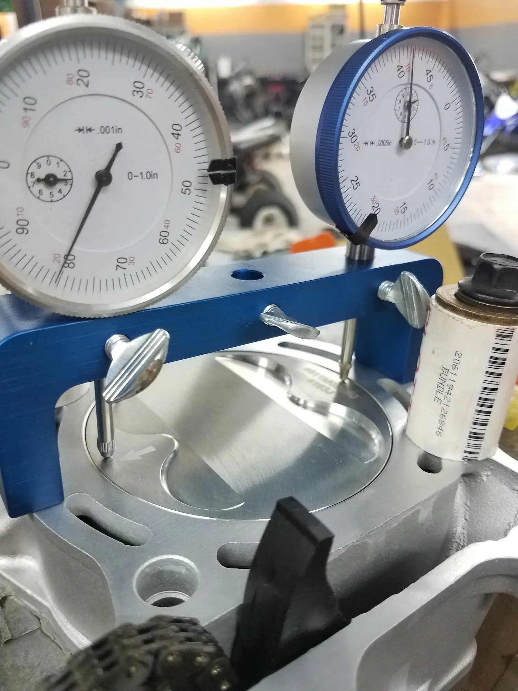

In-house dyno tuning
Dialed in on the rollers
Riders tow race quads and bikes from hours away to get tuned on the 5 Star dyno in Lizella. Pipe, programmer and tune, often in one visit.

Inside the dyno cell
Take the tour
Tap the numbered pins to see what each part of the dyno setup does.

- The rollers. The drive wheel spins the drum under load while the software records the run.
- Wheel chock. Holds the front end steady while the machine is strapped down.
- Cooling fans. Keep the engine at temperature through back-to-back pulls.
- Tuning station. The live readout on screen guides each change to the fuel map.
- Dynojet. The machine is a Dynojet Model 200i, the name on its yellow base.
Just for fun
Make a pull
Press and hold the button to rev it up, watch the shift lights climb and let go before the limiter. The real thing happens on the rollers in Lizella.
“Mitch went above and beyond and I really appreciate him. I took my LTR450 in to be dyno tuned today. It was a 3 hr drive and well worth it. Even when he wasn't able to tune it because the bike had a problem i was unfamiliar with; he fixed the problem and then clean her up and she is riding wonderfully. Very knowledgeable and helpful!!”Dominque Riley · Google review
How a dyno session goes
Five steps to dialed
A typical tune, start to finish.

Strap down
The machine is rolled onto the dyno and strapped down tight.
Baseline pull
A first run shows where the engine is making power, and where it isn’t.
Dial it in
Jetting or the fuel programmer map gets adjusted between pulls.
Prove it
More pulls on the rollers until the numbers and the feel line up.
Ride it
You leave with a machine that pulls clean through the rev range.

Dial indicators on a cylinder headParts + tune, one visit
Pipe. Programmer. Dyno.
A new exhaust or fuel programmer only pays off when the tune matches it. Here the install and the dyno time happen together.
“Guys got me in quick. 3 employees knocked out raptor. Pipe / power commander / dyno all within couple hours. They know their stuff. Finding a good clean shop is very hard to find. These guys are your answer”Brenton field · Google reviewBook dyno time
Lizella · Macon area
Tow it in. Get it dialed.
Call to set up dyno time. Tell the shop what you’re running and what you’ve already done to it.